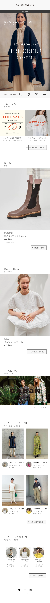
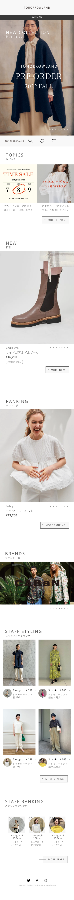
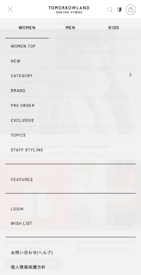
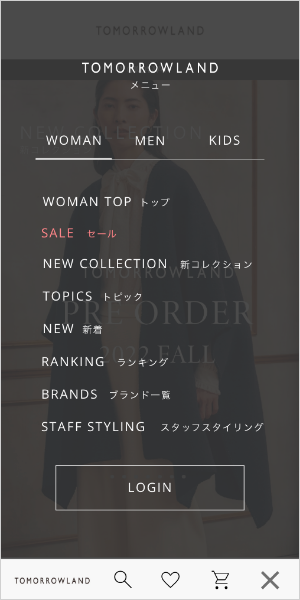
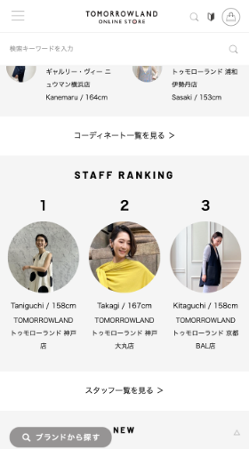
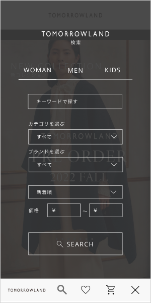
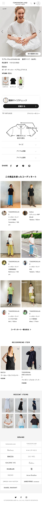
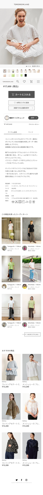

◆アパレルECサイト
TOMORROWLANDのECサイトのUIを改善してみました。
Problem
主な問題点
- 使いにくい構造でストレスがかかる
-
TOMORROWLANDは上質で高級感の
あるブランドなのに、よくあるチープ
なデザインで、差別化できていない
Solution
改善案
- 探している商品を見つけやすい構造に
- 写真で魅せて高級感を演出
-
余裕がある3~40代女性をターゲットに
シンプルかつ上品なデザインに
before
after
 







After
- ヘッダーを指が届きやすい右下に大きく配置
- 検索、お気に入り、かご、メニューをわかりやすく
- メインビジュアルを大きく魅力的に
- TOPICの表示が多すぎるので削減
- 全体的に余白を増やし、洗練されたデザインに
-
各コンテンツのタイトルを英語と日本で表示し、
オシャレさとわかりやすさを両立 -
フォントはブランドらしい上品で洗練された
細めのゴシック体を使用 - 商品見せるためNEWとRANKINGの順番を上に
- 商品写真を大きく、スライド表示に
-
ページ最下部のブランド一覧がロゴだけで押して
みようと思えないので、順番を上に変更し、
魅力的な写真でブランドページへ誘導
After
- ナビの文字を大きく、色のコントラストを強く
- 背景を暗くしてメニュー画面に変わったことを強調
-
英語だけだとパッと見てわからないので
日本語を追加 -
ログインはページリンクと機能が違うので
ボタンで表示し、ログインへと誘導 -
フリーワードだけじゃ検索しにくい
様々な条件で検索できるように
After
-
どんな画像が何枚あるかわからない、飛ばせない
画像一覧の表示でわかりやすく＆選べるように -
写真だけだと実物がわからず買うのを躊躇う
動画を載せることでリアルが伝わり、安心できる -
カートに入れるボタンが無い
カート、お気に入り、店舗を探す、のボタンを
目立たせて次のアクションに誘導する -
アイテム説明がアコーディオンに隠れていて面倒
最初から表示し、サイズと切り替え表示 -
下のレコメンド商品が少ない
関連する商品をオススメして購買に繋げる - ブランド一覧は必要性を感じないため削除